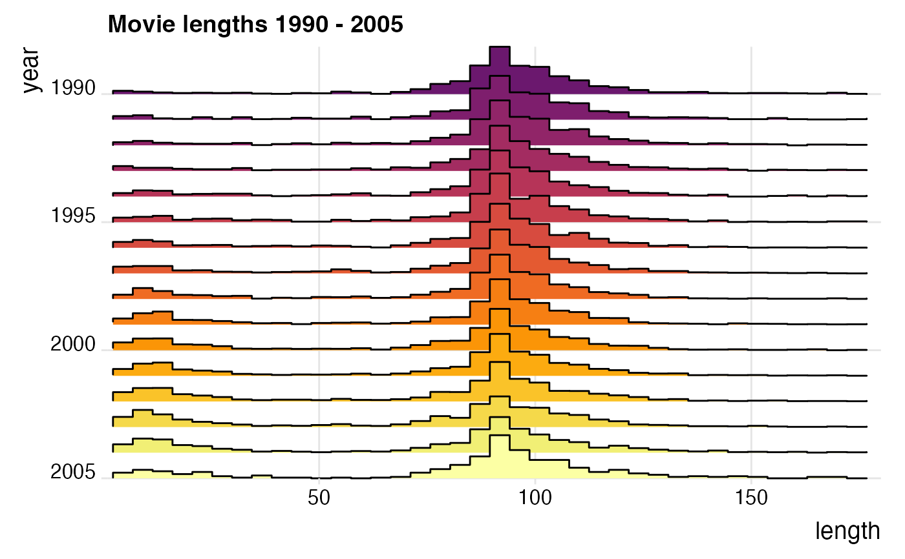
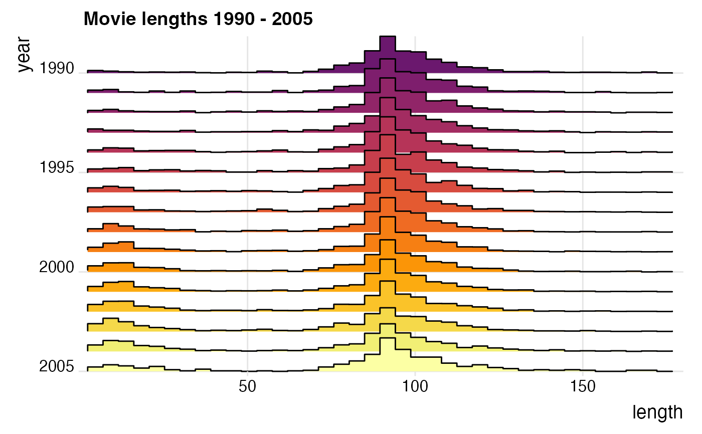

Works like stat_bin except that the output is a ridgeline describing the histogram rather than
a set of counts.
Usage
stat_binline(
mapping = NULL,
data = NULL,
geom = "density_ridges",
position = "identity",
...,
binwidth = NULL,
bins = NULL,
center = NULL,
boundary = NULL,
breaks = NULL,
closed = c("right", "left"),
pad = TRUE,
draw_baseline = TRUE,
na.rm = FALSE,
show.legend = NA,
inherit.aes = TRUE
)Arguments
- mapping
Set of aesthetic mappings created by
aes(). If specified andinherit.aes = TRUE(the default), it is combined with the default mapping at the top level of the plot. You must supplymappingif there is no plot mapping.- data
The data to be displayed in this layer. There are three options:
If
NULL, the default, the data is inherited from the plot data as specified in the call toggplot().A
data.frame, or other object, will override the plot data. All objects will be fortified to produce a data frame. Seefortify()for which variables will be created.A
functionwill be called with a single argument, the plot data. The return value must be adata.frame, and will be used as the layer data. Afunctioncan be created from aformula(e.g.~ head(.x, 10)).- geom
The geom to use for drawing.
- position
A position adjustment to use on the data for this layer. This can be used in various ways, including to prevent overplotting and improving the display. The
positionargument accepts the following:The result of calling a position function, such as
position_jitter(). This method allows for passing extra arguments to the position.A string naming the position adjustment. To give the position as a string, strip the function name of the
position_prefix. For example, to useposition_jitter(), give the position as"jitter".For more information and other ways to specify the position, see the layer position documentation.
- ...
Other arguments passed on to
layer()'sparamsargument. These arguments broadly fall into one of 4 categories below. Notably, further arguments to thepositionargument, or aesthetics that are required can not be passed through.... Unknown arguments that are not part of the 4 categories below are ignored.Static aesthetics that are not mapped to a scale, but are at a fixed value and apply to the layer as a whole. For example,
colour = "red"orlinewidth = 3. The geom's documentation has an Aesthetics section that lists the available options. The 'required' aesthetics cannot be passed on to theparams. Please note that while passing unmapped aesthetics as vectors is technically possible, the order and required length is not guaranteed to be parallel to the input data.When constructing a layer using a
stat_*()function, the...argument can be used to pass on parameters to thegeompart of the layer. An example of this isstat_density(geom = "area", outline.type = "both"). The geom's documentation lists which parameters it can accept.Inversely, when constructing a layer using a
geom_*()function, the...argument can be used to pass on parameters to thestatpart of the layer. An example of this isgeom_area(stat = "density", adjust = 0.5). The stat's documentation lists which parameters it can accept.The
key_glyphargument oflayer()may also be passed on through.... This can be one of the functions described as key glyphs, to change the display of the layer in the legend.
- binwidth
The width of the bins. Can be specified as a numeric value or as a function that calculates width from unscaled x. Here, "unscaled x" refers to the original x values in the data, before application of any scale transformation. When specifying a function along with a grouping structure, the function will be called once per group. The default is to use the number of bins in
bins, covering the range of the data. You should always override this value, exploring multiple widths to find the best to illustrate the stories in your data.The bin width of a date variable is the number of days in each time; the bin width of a time variable is the number of seconds.
- bins
Number of bins. Overridden by
binwidth. Defaults to 30.- center, boundary
bin position specifiers. Only one,
centerorboundary, may be specified for a single plot.centerspecifies the center of one of the bins.boundaryspecifies the boundary between two bins. Note that if either is above or below the range of the data, things will be shifted by the appropriate integer multiple ofbinwidth. For example, to center on integers usebinwidth = 1andcenter = 0, even if0is outside the range of the data. Alternatively, this same alignment can be specified withbinwidth = 1andboundary = 0.5, even if0.5is outside the range of the data.- breaks
Alternatively, you can supply a numeric vector giving the bin boundaries. Overrides
binwidth,bins,center, andboundary.- closed
One of
"right"or"left"indicating whether right or left edges of bins are included in the bin.- pad
If
TRUE, adds empty bins at either end of x. This ensures that the binline always goes back down to 0. Defaults toTRUE.- draw_baseline
If
FALSE, removes lines along 0 counts. Defaults toTRUE.- na.rm
If
FALSE, the default, missing values are removed with a warning. IfTRUE, missing values are silently removed.- show.legend
logical. Should this layer be included in the legends?
NA, the default, includes if any aesthetics are mapped.FALSEnever includes, andTRUEalways includes. It can also be a named logical vector to finely select the aesthetics to display.- inherit.aes
If
FALSE, overrides the default aesthetics, rather than combining with them. This is most useful for helper functions that define both data and aesthetics and shouldn't inherit behaviour from the default plot specification, e.g.borders().
Examples
library(ggplot2)
ggplot(iris, aes(x = Sepal.Length, y = Species, group = Species, fill = Species)) +
geom_density_ridges(stat = "binline", bins = 20, scale = 2.2) +
scale_y_discrete(expand = c(0, 0)) +
scale_x_continuous(expand = c(0, 0)) +
coord_cartesian(clip = "off") +
theme_ridges()
 ggplot(iris, aes(x = Sepal.Length, y = Species, group = Species, fill = Species)) +
stat_binline(bins = 20, scale = 2.2, draw_baseline = FALSE) +
scale_y_discrete(expand = c(0, 0)) +
scale_x_continuous(expand = c(0, 0)) +
scale_fill_grey() +
coord_cartesian(clip = "off") +
theme_ridges() +
theme(legend.position = 'none')
ggplot(iris, aes(x = Sepal.Length, y = Species, group = Species, fill = Species)) +
stat_binline(bins = 20, scale = 2.2, draw_baseline = FALSE) +
scale_y_discrete(expand = c(0, 0)) +
scale_x_continuous(expand = c(0, 0)) +
scale_fill_grey() +
coord_cartesian(clip = "off") +
theme_ridges() +
theme(legend.position = 'none')
 library(ggplot2movies)
ggplot(movies[movies$year>1989,], aes(x = length, y = year, fill = factor(year))) +
stat_binline(scale = 1.9, bins = 40) +
scale_x_continuous(limits = c(1, 180), expand = c(0, 0)) +
scale_y_reverse(expand = c(0, 0)) +
scale_fill_viridis_d(begin = 0.3, option = "B") +
coord_cartesian(clip = "off") +
labs(title = "Movie lengths 1990 - 2005") +
theme_ridges() +
theme(legend.position = "none")
#> Warning: Removed 118 rows containing non-finite outside the scale range
#> (`stat_binline()`).

count_data <- data.frame(
group = rep(letters[1:5], each = 10),
mean = rep(1:5, each = 10)
)
count_data$group <- factor(count_data$group, levels = letters[5:1])
count_data$count <- rpois(nrow(count_data), count_data$mean)
ggplot(count_data, aes(x = count, y = group, group = group)) +
geom_density_ridges2(
stat = "binline",
aes(fill = group),
binwidth = 1,
scale = 0.95
) +
geom_text(
stat = "bin",
aes(y = group + 0.9*stat(count/max(count)),
label = ifelse(stat(count) > 0, stat(count), "")),
vjust = 1.2, size = 3, color = "white", binwidth = 1
) +
scale_x_continuous(breaks = c(0:12), limits = c(-.5, 13), expand = c(0, 0)) +
scale_y_discrete(expand = c(0, 0)) +
scale_fill_cyclical(values = c("#0000B0", "#7070D0")) +
guides(y = "none") +
coord_cartesian(clip = "off") +
theme_ridges(grid = FALSE)
library(ggplot2movies)
ggplot(movies[movies$year>1989,], aes(x = length, y = year, fill = factor(year))) +
stat_binline(scale = 1.9, bins = 40) +
scale_x_continuous(limits = c(1, 180), expand = c(0, 0)) +
scale_y_reverse(expand = c(0, 0)) +
scale_fill_viridis_d(begin = 0.3, option = "B") +
coord_cartesian(clip = "off") +
labs(title = "Movie lengths 1990 - 2005") +
theme_ridges() +
theme(legend.position = "none")
#> Warning: Removed 118 rows containing non-finite outside the scale range
#> (`stat_binline()`).

count_data <- data.frame(
group = rep(letters[1:5], each = 10),
mean = rep(1:5, each = 10)
)
count_data$group <- factor(count_data$group, levels = letters[5:1])
count_data$count <- rpois(nrow(count_data), count_data$mean)
ggplot(count_data, aes(x = count, y = group, group = group)) +
geom_density_ridges2(
stat = "binline",
aes(fill = group),
binwidth = 1,
scale = 0.95
) +
geom_text(
stat = "bin",
aes(y = group + 0.9*stat(count/max(count)),
label = ifelse(stat(count) > 0, stat(count), "")),
vjust = 1.2, size = 3, color = "white", binwidth = 1
) +
scale_x_continuous(breaks = c(0:12), limits = c(-.5, 13), expand = c(0, 0)) +
scale_y_discrete(expand = c(0, 0)) +
scale_fill_cyclical(values = c("#0000B0", "#7070D0")) +
guides(y = "none") +
coord_cartesian(clip = "off") +
theme_ridges(grid = FALSE)